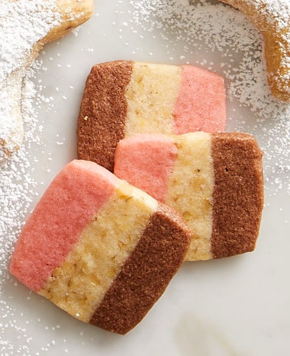

Neapolitan Cookies

Description
This cute refrigerator cookie resembles the popular ice cream flavor. There are chocolate, pink and white stripes.
Ingredients
- 1 cup butter, softened
- 1 ½ cups white sugar
- 1 egg
- 1 teaspoon vanilla extract
- 2 ½ cups all-purpose flour
- 1 ½ teaspoons baking powder
- ½ teaspoon salt
- ½ teaspoon almond extract
- 5 drops red food coloring
- 1 (1 ounce) square unsweetened chocolate, melted
- ½ cup chopped walnuts
Steps
- In a medium bowl, cream together the butter and sugar. Stir in the eggs and vanilla. Combine the flour, baking powder, and salt; stir into the creamed mixture. Divide dough equally into three small bowls. Add almond extract and red food coloring to one portion; stir until thoroughly mixed. Mix chocolate into second bowl, and walnuts into the third bowl.
- Line a 9x5 inch loaf pan with waxed paper, and spread almond dough evenly in the bottom of the pan. Spread the walnut dough evenly over the almond layer, and top with chocolate dough layer. Cover layered dough with waxed paper, and place in the refrigerator until firm, about 4 hours.
- Preheat oven to 350 degrees F (175 degrees C). Turn out chilled dough by inverting pan; peel off waxed paper. With sharp knife, cut dough lengthwise in half. Slice each half of dough crosswise into 1/4 inch slices. Place slices on cookie sheet one inch apart.
- Bake 10 to 12 minutes in the preheated oven, until light brown. Remove to wire racks to cool.